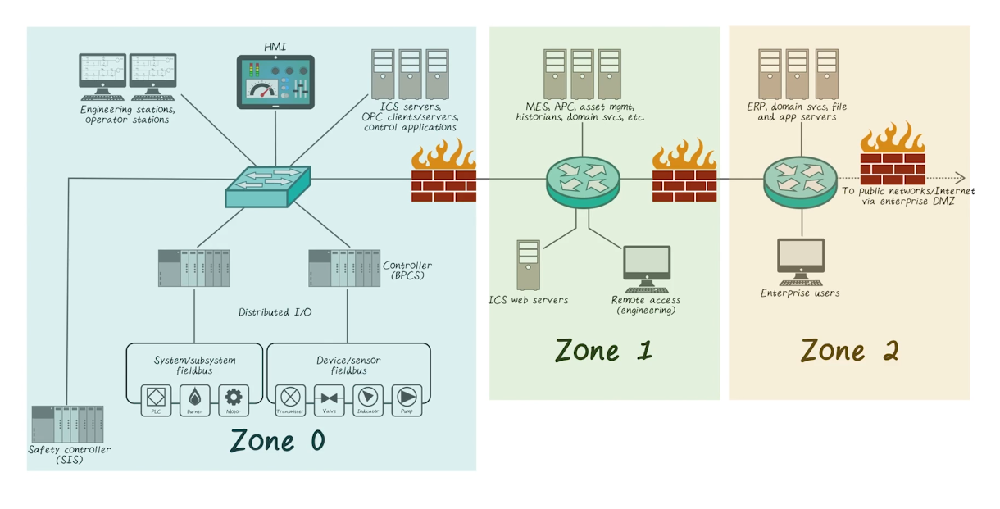
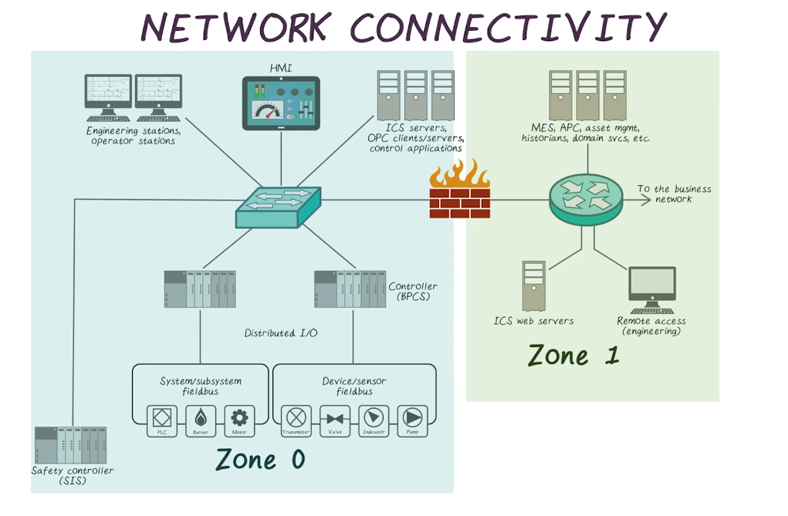
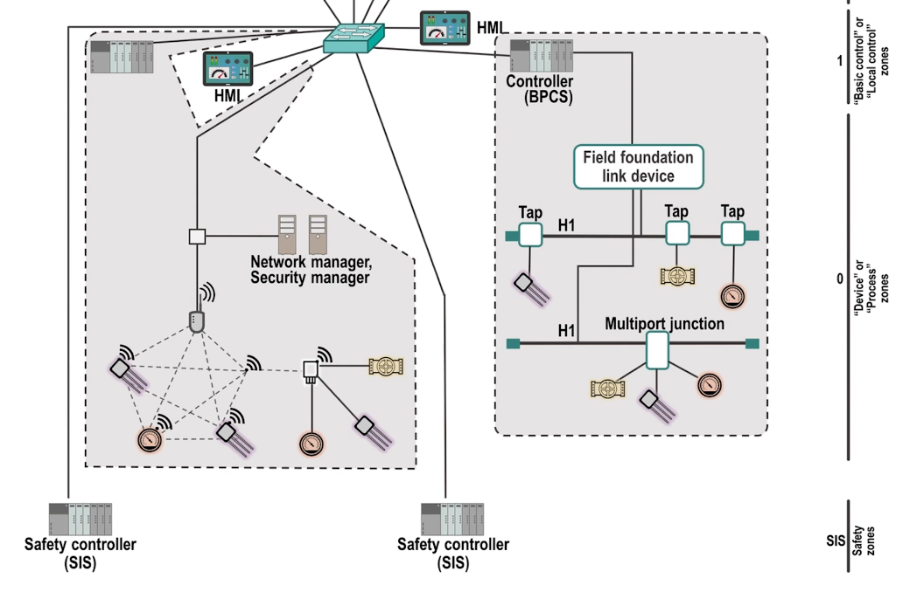
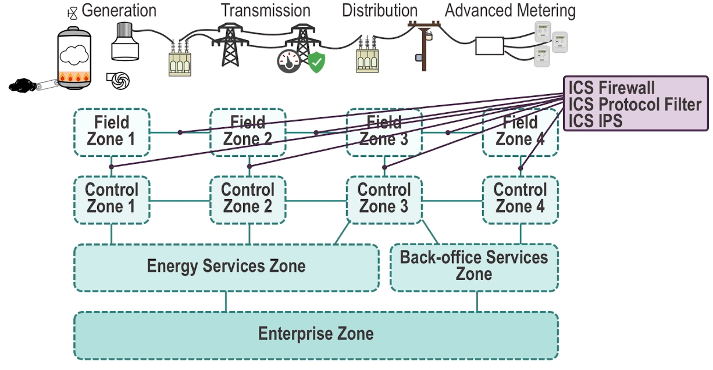
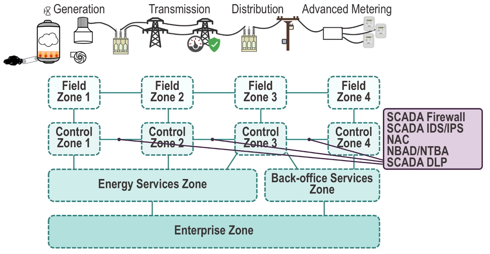
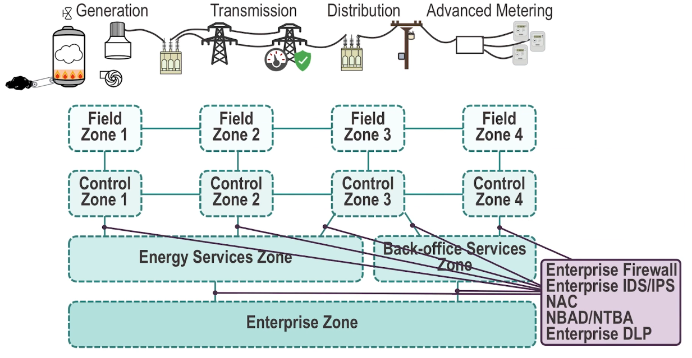
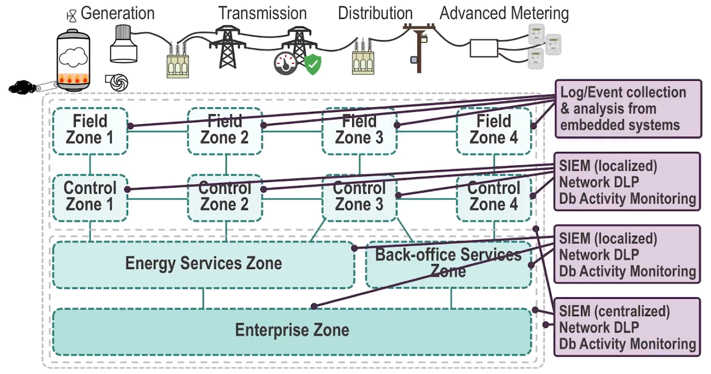

ICPSS Lecture Notes - Lesson 12 - Securing Industrial Control Systems
Securing Industrial Control Systems
Identifying and Classifying Security Zones and Conduits
- Developing base requirements to determine asset placement in a zone is a challenge
- These requirements or goals can typically be broken down into two broad categories
- Communications and how each asset interacts with other assets outside a particular zone
- Physical access to assets is another means of classifying the assets within a particular security zone
Recommended Security Zone Separation
- Zones may be defined “broadly” (“control” versus “business” zones) or narrowly, creating zones for highly granular functional groups of assets
- A functional group can be based on almost anything
- safety
- basic process control
- supervisory controls
- peer-to-peer control process
- and others
- When assessing the network and identifying potential zones, include:
- all assets (physical devices)
- systems (logical devices like software and applications)
- users
- protocols
- other items
- Attempt to separate items, such as a protocol from an asset
- If the two can be separated without impacting either item’s primary function, then they belong to two functional groups, and are therefore excellent candidates for their own zones
Examples:
- Similarity and physical proximity
- 
- Network Connectivity
- 
- Logical separation is done by use of layer 3 networking devices to separate physically proximate zones from each other (e.g. a firewall, subnets). Can be done with Layer 2 using VLANs but this is not recommended.
- Control Loops
- Zones can also be made for control loops within an ICS system. This canoften span across multiple components of an ICS as described earlier in the class
- 
- It can be unclear which group to place something in, when function, physical proximity, and network connectivity offer conflicting answers
- Zones often span different integration levels, as things like HMI, historian, sensors, and controllers are all at different points in the control flow but may belong to the same group
Remote Access
- Many systems allow remote access (such as HMIs, RTUs, historians, etc)
- Often via routable network connection
- Remote access refers to any communication through conduits to an external zone
- does not have to be through a WAN or anything
- From a zone perspective, this is two zones being connected through what may be trusted or untrusted conduits
- Should always be done through secure VPNs or similar, which allow only predefined point to point connections and allowlisted behaviors
Users and Roles
- Either a user or a system ultimately is what’s accessing any system
- Historically functional groups were built around system accesses, they were about which device could access another device
- Users are just as important though. This requires a lot of legwork to identify users and define roles
System Protocols
- You can also create functional groups around protocols. If a device is only supposed to be using specific procotocols, any others seen from that device should be noted and disallowed
System Criticality
- Zone-based security is about isolating common influencing factors into functional groups
- Safety-integrity level can be quantified
- Security level (SL) has been developed by ISA as a part of the ISA-62443 security standards to provide a measure for addressing the relative security of a particular security zone or conduit
- When applied as part of the security lifecycle, a “target security level” is determined
- “Capability Security Level” so thatcomponens and systems can be selected that help ensure all assets within a particular zone meet the same SL
- Once thee system is commissioned, a final “Achieved Security Level” can be determined through physical assessment to ensure that the system has been properly installed and commissioned, and that the system meets the desired Security Level once it is in operation
- Determining the criticality of a zone is a similarly straightforward process, and uses a similar methodology as determining critical assets as discussed in a previous lecture
- A good rule of thumb is that any zone that contains a critical asset is a critical zone
Establishing Security Zones and Conduits
- Conduits are a type of zone that only contains communication mechanisms as its assets
- These assets are communication assets, such as active and passive network infrastructure (cables, switches, routers, firewalls, etc), as well as the communication channels that are transmitted over these cables
- Nested subzones may be created for particular assets that may be aligned with other assets within the particular zone
- This information will become vital in identifying possible security countermeasures that could be used to reduce the risk resulting from a threat
- Zones are established considering the technologies that are both allowed and disallowed within the zone
- Each type of technology possesses inherent vulnerabilities and with these vulnerabilities a certain amount of risk
- These technologies must be aligned with security zones in order to prevent one technology from compromising the entire zone
- Creating conduits and assigning “communication” assets to these special zones may be unclear
- In most industrial architectures ,the physical network is the external conduit
- There are internal conduits that control process communication
- Documenting security conduits, and the communication channels containted within them, is vital to accurately deploying security controls
Securing the Smart Grid
- The consequences of a cyber attack against the Smart Grid range from espionage to sabotage, and from petty theft to larger privacy concerns
- While no one product or technology is certain to stop all attacks, when used together in a defense-in-depth posture across all areas of the Smart Grid, it is possible to greatly minimize the risk of a successful cyber attack
- However, despite the degree of endpoint, network, and data security that is established, vulnerabilities will still remain as new and more sophisticated exploits are developed
- It is therefore necessary to, above all else, establish appropriate monitoring of all Smart Grid systems to obtain situational awareness
- By looking at the entirety of a system’s digital behaviors, areas of risk can be identified, attacks can be detected, and suspicious or dangerous trends can be identified
Field Zone Protection

- Field devices are often embedded systems
- Low cost and low power consumption
- Smart grid owner is unable to alter these devices, or install any commercially available cyber security countermeasure
- Onus falls to the device manufacturer to build cyber security
- Application allowlisting is one of the more popular software security solutions for embedded devices
- Biggest advantage in an embedded system is, of course, that the allowlist rarely changes
- Vendors who are designing the silicon used within thesedevices are working with security vendors and researchers to implement a greater degree of protection
- Many field device vendors have implemented secure coding and design practices, while others are addressing compensatory features to limit vulnerabilities, protect against exploits, or provide secure communication capability
Control Zone Protection

- As we move further in from the field and into the substations, we see more sophisticated devices (e.g. SCADA servers, measurement and data management servers, AMI headends, and similar server-based systems)
- Technologies deployed include:
- Application allowlisting
- Antivirus
- Configuration management
- Full system hardening
- Separation of services (either to dedicated hardware or to individual virtual machines if virtual data centers are utilized)
- Host IDS or IPS
- Host data loss prevention (DLP)
- Event logging
Service Zone Protection and Back-Office Systems

- As we get to centralized SCADA systems, historians, data concentrators, and back-office systems, the capabilities of the servers increase, as does the value of the data
- There is an increased reliance upon the integrity of the data and less on availability since we are moving away from real-time control to more transaction-based information
- Data integrity and information assurance tools, including database security solutions, database auditing, and data loss prevention tools in these areas
Compensating Controls
- Can’t just implement and COTS tool here, lots of extreme conditions or unique requirements
- A compensating control is a data security measure that is designed to satisfy the requirement for some other security measure that is deemed too difficult or impractical to implement
- Includes devices such as firewalls, IDS and IPS, network access control systems, and similar devices
- Authorized traffic can still be used to compromise a system, though, so should be supplemented with
- Industrial protocol filters monitor industrial protocols
- IDS performing deep packet inspection (DPI)
- IPS
- Application content inspection
- Transport Layer Security
Advanced Network Monitoring
- A monitored network connection can be used to aid security in several ways
- Often, anomalous behavior can indicate that some sort of cyber attack is undeway
- Breach has occurred and additional infection stages are in process
- By feeding network flow information to a Security information and event management (SIEM) or log management tool, anomalies may be detected after the fact
- One advantage to this method is that multiple flows can be compared, against each other and against other security events
- This enables the detection of more complex threats such as multi-vector attacks, low-and-slow attacks, and blended attack scenarios
Network Forensics
- Network forensics tools capture all network traffic, storing it as abase of forensic evidence that is extremely useful to investigators should a breach occur
- Network packet capture does require an investment in storage, but the return can be well worth it
Data Loss Prevention (DLP)
- DLP provides detection of sensitive information, both at rest and in motion
- This information could include:
- Distributed measurements from PMUs, PDCs, the metering infrastructure, etc.
- Power consumption information or other data with potential privacy concerns
- Customer finance information from billing and payment systems
Protecting Data and Applications Within the Smart Grid
- Protecting the data and applications being used within the Smart Grid means understanding how the Smart Grid works and its interconnectedness
- Being aware of all the data and applications that are being used within the Smart Grid, including:
- Where automation logic resides, what it controls, and how
- Where measurements are being taken, and how those measurements are being used
- Where management systems – including SCADA, EMS, and other systems – reside, what they manage, and how
- What business applicationsn are being used, how they utilize or depend upon grid operations or measurement data, and how they obtain that data
- Where repositories of data reside, and how they are stored (i.e. a database)
- Collecting that information in a format that is relevant to digital cybersecurity, even if the data spans multiple domains or zones
- Analyzing and assessing that data to detect indications of cyber risk and threat
- Articulating that analysis back to the many stakeholders involved in Smart Grid operations
- This task can be made easier by somewhat understanding the grid using technology (e.g. tools that provide monitoring)
- One of the most difficult tasks in securing ICS networks is that there is zero tolerance for any “false postiives”
- Traditional office network tools/technologies could prove to be disastrous when implemented on sensitive, time-critical ICS networks 
- Monitoring technologies include:
- SIEM or security information and event management systems
- Network DLP that prevents the loss or theft of data across the network
- Database Activity Monitoring or “DAM” monitors activity to and from the database
- The SIEM can be deployed for both local information management or centralized
- Data that should be protected include:
- SCADA project files
- Personal data about customers or end users
- Information about the grid (intellectual property)
- SCADA servers
- EMS
- Demand, response, AMI, and HEMS
- End-user information
Situational Awareness
- Situational Awareness refers to process of perception, decision, and action that enables the assessment of and reaction to a situation
- The first step (perception) requires the collection and aggregation of information from a variety of digital systems
- The next step is to make educated decisions based upon the situation
- SIEM tools provide many automated mechanisms to make decisions
- Corellation of collected data
- Tracking or “scoring” risk associated with specific assets, users, or applications
- Filtering large amounts of data against defined criteria, and/or cross-referencing information against outside information sources
### What should be monitored?
- Lots of things. Basically, if it has a network interface and its connected to the grid, it should be monitored
- Also, all activity from the network itself should be monitored
- All data produced, such as by measurement devices or phasors, etc
- Logging and event detection is best, but for devices without logging or event generation, another means of information collection is needed. For example, integrate with PLCs or Historians that already watch these devices
CPS Specific Security: Physics of the Systems
- Modeling the physical system to
- Ensure that the resulting data generated are physically meaningful
- e.g. If system is modeled, false data can be spotted because it won’t correlate with other, legitimate data points
- Ensure that control commands don’t destabilize the process
- e.g. Control commands that overboil a steamer and would wreck the system could be spotted and blocked
- Ensure that the resulting data generated are physically meaningful
- The mechanical and phyiscal properties defining how quickly a device operates differs between devices and produces a unique fingerprint
Honeypots
- Used to lure attackers to a system for reconnaisance
- Most existing CPS honeypots don’t account for process or device behavior
- Multiple types of honeypots
- Low interaction
- High interaction
- Hybrid-interaction
- HoneyPhy: A physics-aware honeypot framework that addresses these problems, and aims to be extensible to all cyber-physical systems
- PoC system described in detail.
- Constructed simple heating system to implement models and test proof of concept
- Mainly concerned with using our architecture to model air temperature in heated volume and model dleay introduced by P&B relay
- Developed analytical model for behavior of temperature inside contained area
- Basically, other CPS honeypots just grab junk values, while HoneyPhy picked values along the expected behavior curve of the physical system, making it hard for an attacker to know they were in a honeypot
- PoC system described in detail.
- Physical Fingerprinting Setup
- Relays: typically used to open or close higher voltage circuits with a lower voltage signal. Common device in ICS and analogous to large scale circuit breakers
- HoneyPhy can also model these
- Test bed setup to basically demonstrate that two different relays can be distinguished between using only remote monitoring. An attacker can therefore, with knowledge, tell whether they’re in the real system they mean to be attacking
- Relays: typically used to open or close higher voltage circuits with a lower voltage signal. Common device in ICS and analogous to large scale circuit breakers